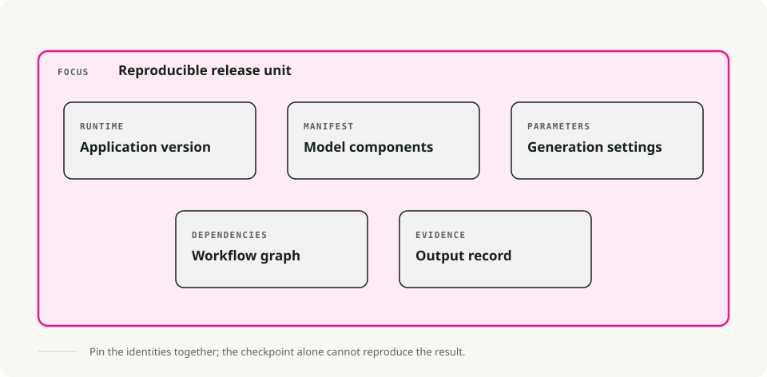
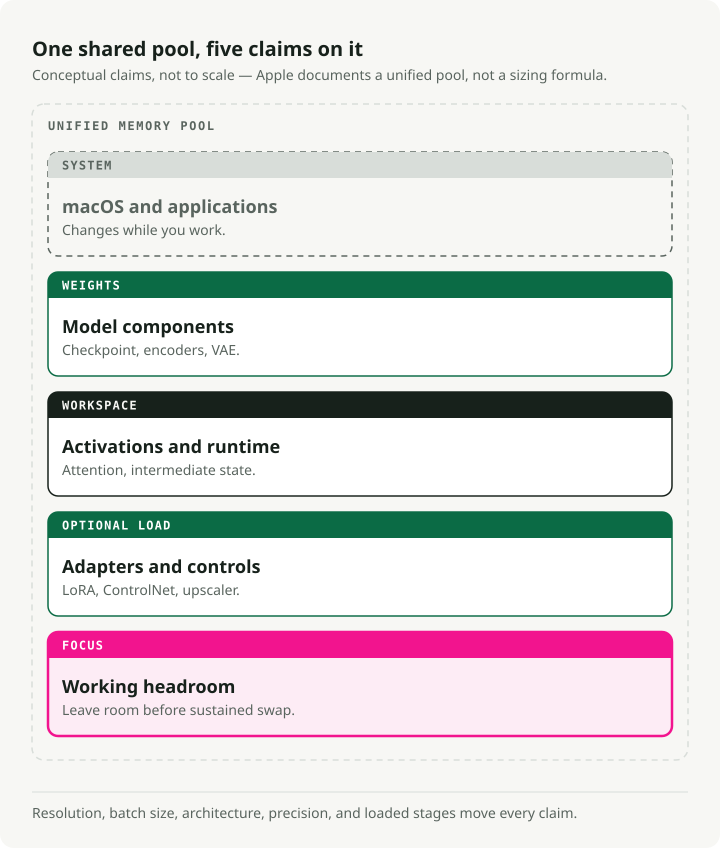
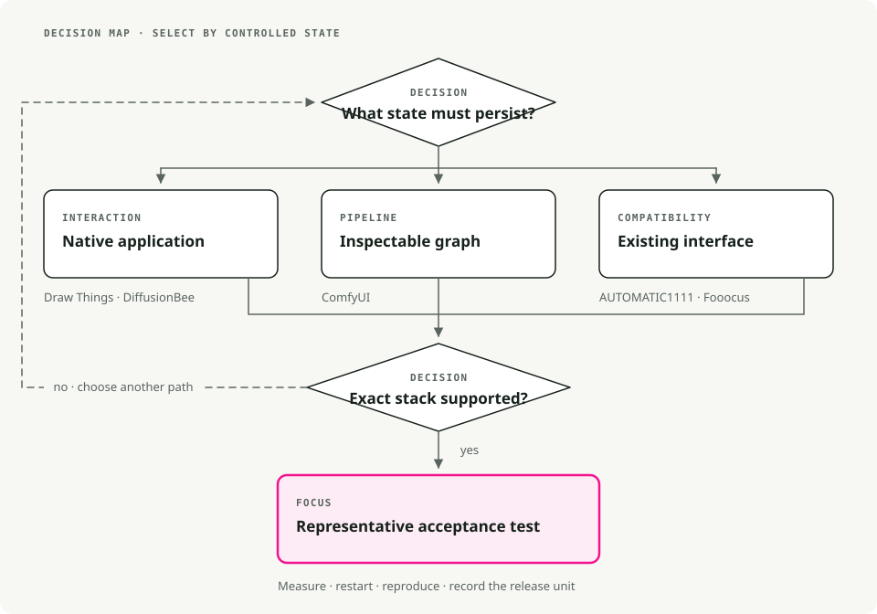

Stable Diffusion on macOS: Draw Things, DiffusionBee, ComfyUI, A1111, and Fooocus
Running image models locally on macOS is mostly a tooling choice. Draw Things, DiffusionBee, ComfyUI, AUTOMATIC1111, and Fooocus overlap, but they differ in setup, model support, workflow control, extensions, and automation.
A drag-and-drop app gets you started quickly; a node graph takes longer to learn but exposes more of the pipeline. On Apple Silicon, the application, model family, precision, image size, and workflow all affect whether generation fits. Choose the interface from the work you need to reproduce, then test the exact model and settings.
TL;DR. Start with Draw Things or DiffusionBee when a native application covers the job. Use ComfyUI when the graph itself must be inspected, shared, or automated. Choose AUTOMATIC1111 only for a workflow that depends on its interface or extensions. Treat Fooocus as a stable SDXL-era workflow, not a route to current model support: its official project is in limited long-term support.
A model file is not a portable workflow

Several applications can load .safetensors files, but a matching extension does not establish compatibility. A complete pipeline may also require a particular architecture, text encoder, VAE, scheduler, ControlNet, LoRA, tokenizer, or application-specific configuration.
Record the release unit that produced an image:
- application and version
- model repository, revision, and license
- every model component and adapter
- prompt, negative prompt, seed, sampler, steps, guidance, and dimensions
- graph or workflow file when the application exposes one
This record matters more than the app's popularity. The same seed can still produce a different image after a backend, model, sampler, or precision change.
Unified memory is shared, not unlimited

Apple Silicon lets the CPU and GPU address one memory pool. That removes a separate copy boundary, but macOS and every open application compete for the same capacity.
For image generation, peak use includes more than checkpoint weights:
peak memory ≈ model components
+ intermediate activations
+ attention and runtime workspace
+ loaded adapters and control models
+ application and OS memory
Resolution, batch size, model architecture, precision, upscaling, ControlNet, and whether components remain loaded all change the result. Do not buy or select a machine from a universal “8/16/32 GB” table. Test the intended workflow and watch memory pressure. A generation that succeeds only through sustained swap is not a comfortable operating point.
Choose by the state you need to control
| Tool | Useful control surface | Operational tradeoff |
|---|---|---|
| Draw Things | Native Apple UI with local models, adapters, ControlNet, and scripts | Dense product-specific interface; verify support for the exact model family |
| DiffusionBee | Packaged macOS application with an integrated generation workflow | Convenience over graph-level inspection; release cadence and supported families must be checked |
| ComfyUI | Explicit node graph, JSON workflows, API, and custom nodes | More moving parts; graphs and third-party nodes become dependencies |
| AUTOMATIC1111 | Form-based Web UI, scripts, API, and a large extension surface | Apple Silicon has documented feature and performance limitations; extensions widen the trust boundary |
| Fooocus | Opinionated, prompt-first SDXL workflow | Officially in limited LTS with bug fixes only; Mac guidance is unofficial and lightly tested |
The table is not a ranking. It tells you where the workflow state lives: inside an app, across a form, or in a graph that can be reviewed.
Draw Things: native interaction and scripting
Draw Things is an Apple-platform application for local image generation. Its current documentation covers models, LoRAs, ControlNet, textual inversion, Core ML, and versioned JavaScript scripting.
Choose it when the work should remain inside a native application but still needs more control than a prompt box. Before standardizing on it, import the exact model components and reproduce one representative edit, adapter, or control workflow. “Native” describes the interface and implementation; it does not guarantee support or speed for every new architecture.
DiffusionBee: packaged macOS workflow
DiffusionBee packages model download and common generation tasks into a desktop application. Its project documentation lists image-to-image, inpainting, outpainting, ControlNet, LoRA, SDXL, and selected Flux support.
Choose it when installation and an integrated UI matter more than exporting a pipeline graph. Check the latest release and the exact architecture before downloading a large model: a feature label such as “Flux support” does not mean every derivative, quantization, or auxiliary component will load.
ComfyUI: the workflow is an artifact
ComfyUI represents generation as a node graph. A workflow can be stored as JSON independently of its output, which makes the pipeline inspectable and versionable. Its executor can also avoid recomputing graph sections whose inputs did not change.
The current ComfyUI Desktop build supports Apple Silicon and manages its own environment, though the official macOS documentation still labels Desktop beta. A Homebrew install is available:
brew install comfyui
Choose ComfyUI when a pipeline has branches, reusable components, multiple models, or automation. Keep the JSON, application version, core-node versions, custom-node revisions, and model manifest together.
Custom nodes are executable dependencies, not harmless presets. Review their source and install scripts, pin revisions, and isolate the environment. A graph from an unknown author can refer to code and models you have not audited.
AUTOMATIC1111: compatibility with an established Web UI
AUTOMATIC1111 Stable Diffusion WebUI exposes generation settings through a browser interface and supports scripts, extensions, and an API. Choose it when an existing tutorial, automation, or extension is part of the requirement.
Its official Apple Silicon guide documents exceptions and performance limitations, including weak training performance. Confirm that the required feature works on the target macOS and PyTorch versions before adopting an extension-heavy setup.
Extensions run code inside the application environment. Pin them, review updates, and keep the service on loopback unless remote access is deliberate and protected.
Fooocus: a bounded SDXL-era option
Fooocus deliberately hides many technical choices behind an opinionated prompt-first workflow. That can be useful when its defaults match the task.
The project's current README says Fooocus is built around SDXL and is in limited long-term support with bug fixes only. It also says Mac is not intensively tested and describes the Mac installation as unofficial. That makes Fooocus a bounded choice for an existing Fooocus workflow, not the default path for new architectures or long-lived macOS infrastructure.
Run one representative acceptance test

Use one small acceptance set before committing to a tool:
- Reproduce a baseline text-to-image result from a recorded seed and settings.
- Run the hardest required operation: inpainting, ControlNet, LoRA, upscale, or a multi-stage graph.
- Restart the application and reproduce the workflow from saved artifacts.
- Measure cold start, generation time, peak memory pressure, and output dimensions.
- Move the workflow to a clean user account or machine and list every missing dependency.
- Verify local-network binding, downloads, analytics settings, licenses, and model provenance.
Do not compare tools with different checkpoints, resolutions, step counts, or precision and call the result a runtime benchmark.
A practical default
For exploratory work, start with a native app and a model it documents. Move to ComfyUI when the workflow itself becomes valuable: when it must be reviewed, repeated, automated, or handed to someone else. Keep AUTOMATIC1111 or Fooocus when an existing dependency makes their specific surface useful.
The durable asset is not the screenshot of a good output. It is the smallest reproducible package of model identities, parameters, dependencies, and workflow state that can produce the result again.